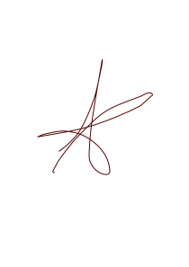

A community practice in showing up
Find your voice.
Then use it.
A place to speak without waiting for perfect words, listen with intent, and make something of the time we share.

SPEAK
UP
SHOW UP
UP
SHOW UP
FIELD NOTES / 001
Made of words, miles & good questions
Different ways to show up
The work is the point.
Two ongoing operations. One shared habit: turn up, take part, and bring something back to the group.
Court of Inquiry
A room for specific questions, open exchange, and a report worth carrying forward.
See the operationThe OutLoud idea
Courage is a practice, not a personality.
You don't have to be the loudest person in the room. You just have to be willing to take your turn: write the thought, ask the question, hear someone out, and try again.
OutLoud is a community space for the things we make and do together. The Library gathers our writing; the operations keep us moving and thinking as a group.
A little more about us